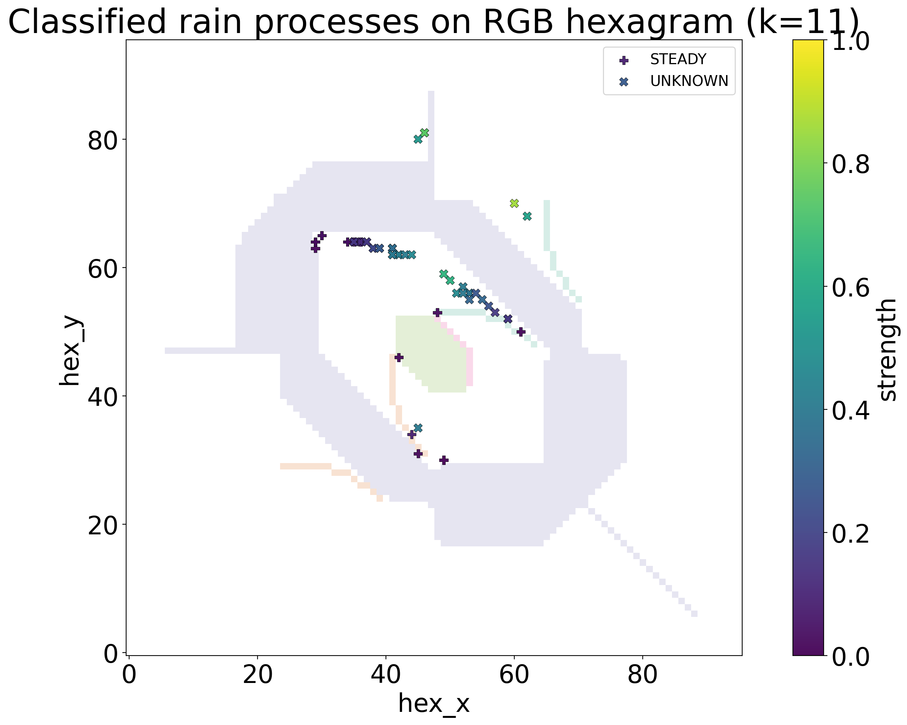

Reflectivity quicklook
The quickest way to inspect a processed product is a time-range view of
Ze or another 2D field.
fig, ax = mrr.quicklook(variable="Ze", source="raprompro", vmin=0, vmax=40)Doppler spectrum and spectrogram
The package can extract a single-gate Doppler spectrum or a range-by-velocity spectrogram for a selected time.
import datetime
fig, path = mrr.plot_spectrum(
datetime.datetime(2025, 3, 8, 12, 50, 0),
target_range=2880.0,
spectrum_var="spectrum_raw",
)
fig, path = mrr.plot_spectrogram(
datetime.datetime(2025, 3, 8, 12, 50, 0),
spectrum_var="spectrum_raw",
)Microphysical process analysis
Layer-scale trends in Dm, Nw and LWC
can be projected to RGB and classified on the package hexagram.
analysis = mrr.rain_process_analyze(
period=(datetime.datetime(2025, 3, 8, 12, 0, 0), datetime.datetime(2025, 3, 8, 12, 10, 0)),
layer=(1000.0, 2000.0),
k=11,
ze_th=-5.0,
min_points_ols=10,
eps_q=0.01,
rgb_q=0.02,
vars_trend=("Dm", "Nw", "LWC"),
)
classified = mrr.classify_rain_process(analysis=analysis)
fig, path = mrr.plot_classified_processes_on_hexagram(
classified=classified,
analysis=analysis,
savefig=False,
)